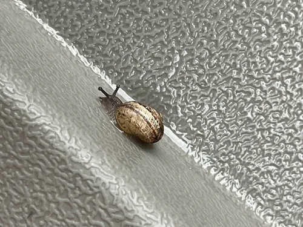

Snails and slime trails
Irregular holes can have several causes. Check for slugs or snails after dusk near fresh damage, especially in damp weather. A silvery trail supports the identification; a hole alone cannot settle it.

What to look for
On a damp evening, check pot rims, leaf undersides and nearby hiding places.
Possible causes and next steps
Snails may leave ragged holes and slime trails. Clear hiding places around pots and monitor new growth.
How to tell similar problems apart
Ragged holes and a silvery trail suggest snails or slugs. Holes without a trail can also be made by caterpillars.
Use a torch after a damp evening to inspect the ground around a freshly chewed seedling. Check where the pot meets the ground, beneath a low leaf and beside boards or dense groundcover. Look for an animal close to the fresh bite. A shiny trail may be easier to see when light falls across it from the side; its absence after a dry day does not settle the question.
What to do now
Look under pot rims and boards after dusk. Remove hiding places immediately beside vulnerable seedlings.
Protect the most vulnerable growth first. Move a seedling tray away from a damp hiding place and lift loose items nearby to inspect underneath. Water the root zone when needed rather than repeatedly wetting the path around it late in the day. If damage continues despite removing nearby shelter, compare the timing of new bites with sightings. Pellet-like droppings or a folded leaf holding a larva suggest a different feeder.
What to check next
Look for fresh trails and new bites after damp nights. A shell found nearby may be empty.
Follow fresh slime from a newly chewed seedling toward the nearest pot base, board or dense ground cover. Inspect the shelter by day and the seedling after dusk. A dry silver trail crossing a path shows past travel but does not by itself identify which plant was eaten.